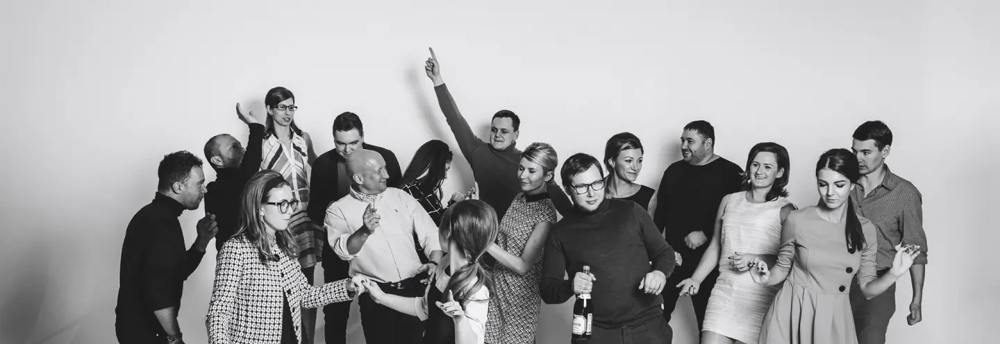
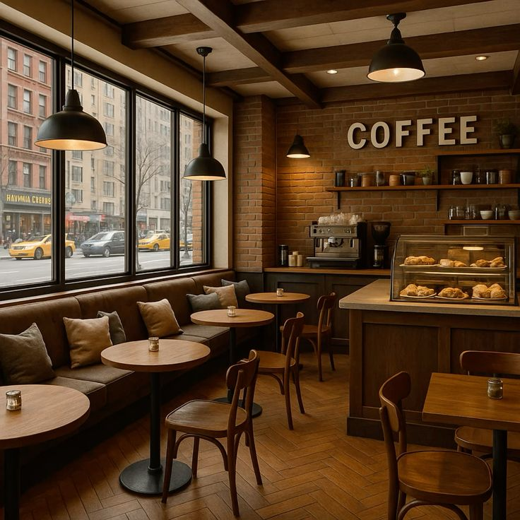

О компании
«Жить настоящим моментом, сохраняя традиции» — такова философия Coffейни, которая направляет нас с самого открытия, когда зажглись первые огни нашей кофейни в самом сердце города.
Страсть к настоящему кофе и стремление создавать уютные пространства привели к тому, что за эти годы мы открыли уже 3 кофейни в разных районах города. Меняются времена года, тренды и вкусы, неизменным остается наше трепетное отношение к качеству каждой чашки и желание совершенствоваться в искусстве кофейного дела. Мы работаем только с отборными зёрнами арабики, используем исключительно свежее молоко и готовим все наши десерты вручную. Мы не используем синтетические сиропы и полуфабрикаты. Всё, что можем приготовить сами — готовим сами: от фирменных сиропов на натуральных ягодах до свежей выпечки каждый день.
Мы обжариваем кофе полного цикла: сами отбираем зёрна у проверенных фермеров, следим за процессом обжарки по собственным профилям, разработанным нашим мастером-обжарщиком. Всё это позволяет раскрыть уникальный букет каждого сорта и сохранить свежесть вкуса до самой последней чашки. Наша гордость — это моносорта из редких регионов Эфиопии, Колумбии и Кении.
Мы сами создаём уникальные кофейные купажи, экспериментируя с пропорциями и степенью обжарки, чтобы каждый наш гость мог найти свой идеальный вкус. Разрабатываем авторские рецепты напитков, вдохновляясь сезонными продуктами и локальными особенностями.

Мы были одной из первых кофеен в городе, кто полностью отказался от пластиковой посуды в пользу экологичных материалов и внедрил систему скидок для гостей со своими кружками. Наша цель — не просто продавать кофе, а создавать сообщество ценителей качественных напитков и тёплого общения.
Каждая наша кофейня — это не просто точка продаж, а особенное пространство с собственной атмосферой: от минималистичного лофта в деловом центре до уютного уголка с камином в историческом районе. Мы тщательно продумываем дизайн, музыку и даже аромат в каждом заведении.
Мы стали одной из первых кофейных сетей в регионе, получившей международный сертификат SCA (Specialty Coffee Association) по стандартам обжарки и приготовления кофе, который подтверждается ежегодными аудитами. Наши бариста и мастера-обжарщики неоднократно становились призёрами и победителями национальных чемпионатов по латте-арту и альтернативным методам заваривания.
Мы живём в рамках философии осознанного потребления и бережного отношения к окружающей среде. Уже несколько лет мы последовательно снижаем экологический след: используем компостируемые стаканчики, перерабатываем кофейную гущу в удобрения и поддерживаем локальных поставщиков.
наши бариста в день
за день
посетили нас в год
в городе
нашей продукцией
Быть, а не казаться
Это философия компании, которая начинается от продукта, он по-настоящему качественный, до максимальной искренности в отношениях с гостями и ассоциации бренда с мейнстримом времени.
«Наши бариста — немного психологи, немного баристы. Они по звуку вспенивания молока понимают, какой у вас день, и по взгляду — какой кофе его исправит».— Богомья Сергей, создатель